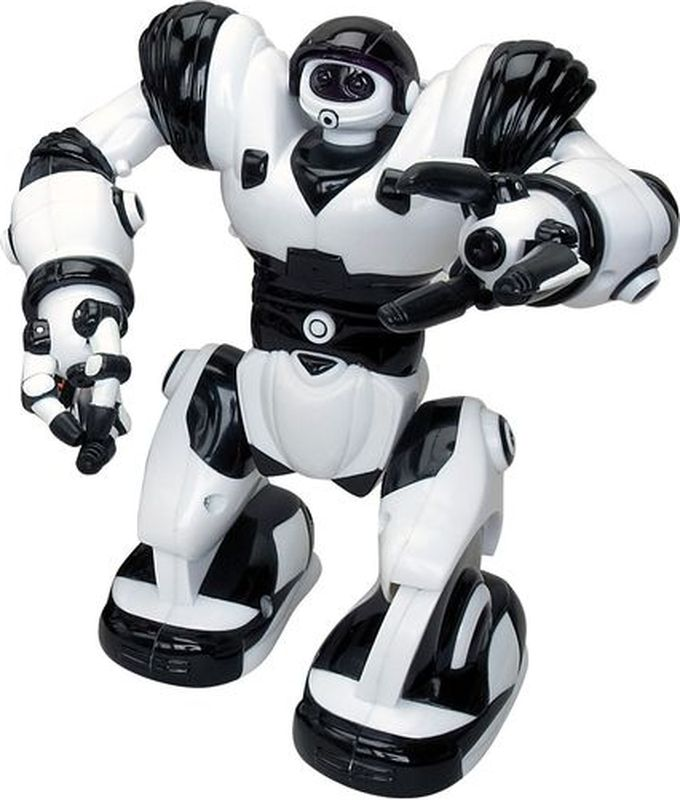

Исторический обзор
Роботы-игрушки начали набирать популярность в 1990-х годах, когда на рынок стали поступать первые интерактивные модели. Эти роботы были способны реагировать на команды, выполнять простые действия и развлекать детей. Одним из первых таких роботов стал знаменитый "Робо-Кид", который мог двигаться и издавать звуки. С каждым годом технологии совершенствовались, и уже в начале 2000-х появились роботы, способные взаимодействовать с другими устройствами.
«Развитие роботов-игрушек стало возможным благодаря технологиям 21 века.» — Известный инженер
В настоящее время роботы-игрушки имеют огромный функционал. Современные модели оснащены камерами, сенсорами и даже искусственным интеллектом, что позволяет им обучаться и адаптироваться к поведению пользователя. Большинство таких игрушек интегрируются с мобильными приложениями, предоставляя широкий спектр возможностей для кастомизации и игр. В частности, роботы для обучения могут помогать детям осваивать основы программирования, математики, а также развивать логическое мышление.
Для изучения STEM-дисциплин используются специальные роботы, которые способствуют обучению в игровой форме, что значительно повышает мотивацию детей к изучению технических наук.
Кроме того, роботы-игрушки могут служить не только образовательными инструментами, но и развлекательными средствами. Например, роботы с элементами искусственного интеллекта могут имитировать эмоции, реагировать на голосовые команды, а также взаимодействовать с окружающими предметами. Они могут стать отличными друзьями для детей, предлагая разнообразные игры и задания, которые развлекают и обучают одновременно.
Таблица развития роботов-игрушек
| Год | Характеристики | ||
|---|---|---|---|
| Модель | Особенности | Изображение | |
| 1995 | Робот А | Программируемый, базовые действия |  |
| 2000 | Робот Б | Интерактивный, распознавание голоса |  |
| 2010 | Робот С | Дистанционное управление, подключение к Wi-Fi |  |
| Таблица демонстрирует эволюцию роботов-игрушек. | |||
Список популярных моделей
- Программируемый, базовые движения
- Интерактивный, распознавание голоса
- Сенсоры движения, дистанционное управление
Галерея изображений
Мультимедийный контент
Посмотрите видео с демонстрацией роботов-игрушек:
Послушайте аудио-интервью с разработчиками роботов:
Дата публикации: